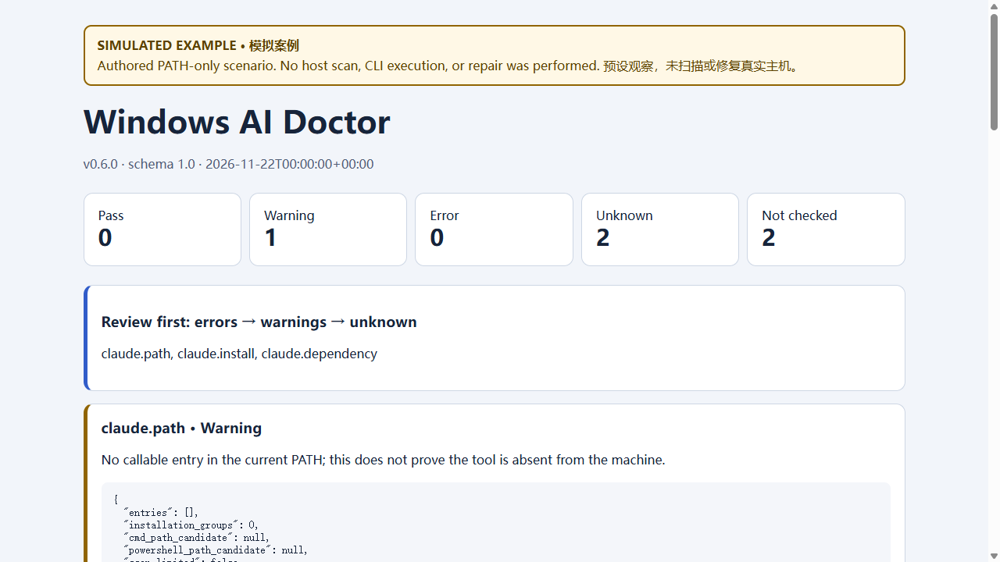

Windows · Claude Code · Codex CLI · 中文
SIMULATED EXAMPLE
Find which Windows layer is breaking Claude Code or Codex
Offline, read-only diagnostics for PATH, duplicate installs, launcher runtime, config syntax, and WSL visibility. This walkthrough is SIMULATED — not a real host scan.
Open English sample report 中文样例 GitHub repository View simulated after report

- SymptomIn this simulated case, the failing terminal cannot find a Claude entry on PATH. The CLI itself is not executed.
- Open the reportRead error → warn → unknown. Start with claude.path or codex.path.
- Manual checkIn the failing shell: Get-Command claude,codex -All and where.exe.
- RecheckAfter a simulated PATH correction: claude.path changes from warn to pass. This does not prove login or an AI task works.
SIMULATED · No installs, repairs, sign-in, config upload, or model API. · Troubleshooting article